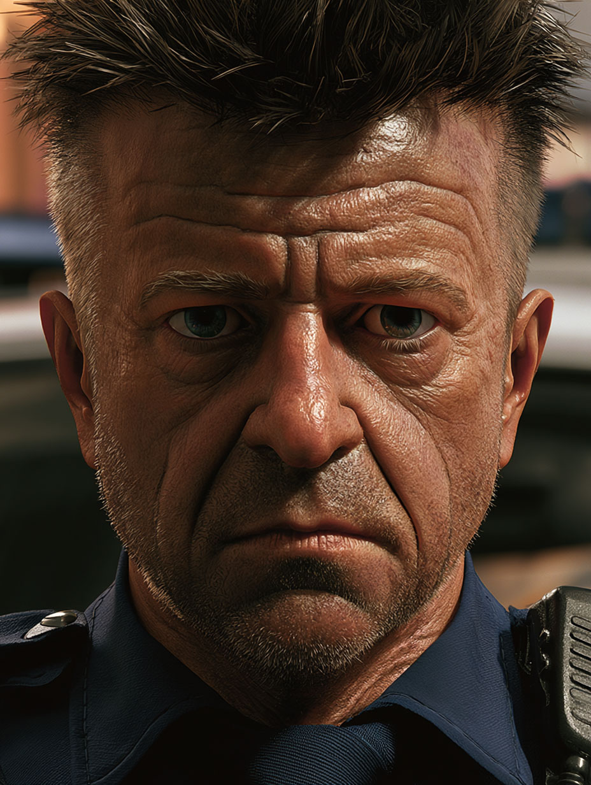

Some things you don't chase. You let 'em run. You trail the echoes.
I don't do small talk. I don't do corporate espionage. I find the things that people with clout and teeth try to bury using procedural tape.
Secure Contact: No walk-ins. Referrals only.
If you're bringing me a mess, make sure it's not one you made yourself by being reckless.
In the music. Detective Sticky is the voice of Rattled, the underrated cop who clocks what Ethel should watch for, reading her from the same side of the pattern. He keeps his notes on veX.